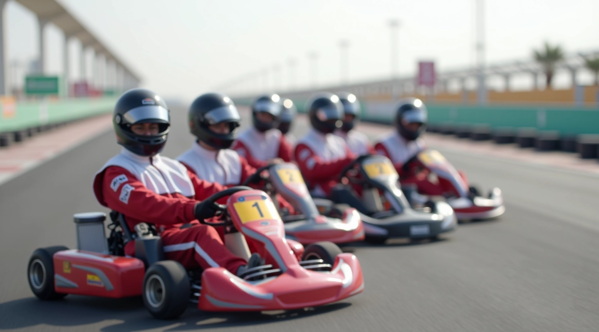

أساسيات تقسيم الأدوار في فريق التحمل
فهم كيفية توزيع المهام بين سائقي الفريق والتحضير الصحيح لكل دور. يغطي هذا الدليل الاستعداد النفسي والبدني لكل عضو.
اقرأ المزيد
تعلم كيفية إتقان تقنيات الفريق والتبديل السلس في سباقات التحمل على حلبة الشيخ زايد
أدلة عملية وتقنيات متقدمة لتحسين أداء فريقك في سباقات الكارتينج الطويلة
فهم كيفية توزيع المهام بين سائقي الفريق والتحضير الصحيح لكل دور. يغطي هذا الدليل الاستعداد النفسي والبدني لكل عضو.
اقرأ المزيد
استراتيجيات التواصل بين السائقين والفريق خلال السباق. تعلم كيفية تنظيم التبديلات السلسة وتجنب الأخطاء الشائعة.
اقرأ المزيد
كيفية إجراء فحوصات الصيانة الأساسية والإصلاحات السريعة خلال فترات التبديل. نصائح عملية لضمان الأداء المستمر.
اقرأ المزيد
كيفية استخدام البيانات والإحصائيات لتحسين الأداء. تتبع الأوقات والسرعات واتخاذ قرارات استراتيجية مبنية على الحقائق.
اقرأ المزيدنقاط أساسية يجب التحقق منها قبل وأثناء سباق التحمل
تأكد من أن جميع السائقين يعرفون الحلبة والاستراتيجية بشكل جيد قبل يوم السباق.
مارس عمليات التبديل عدة مرات. الثواني القليلة تحدث فرقاً في السباقات الطويلة.
وزع الجهد بين السائقين بحكمة. لا تستنزف الطاقة في البداية، احتفظ بالقوة للنهاية.
حافظ على خطوط اتصال واضحة بين السائق والفريق. التحديثات المنتظمة ضرورية.
افحص الإطارات والمحرك والمكابح بشكل منتظم. المشاكل الصغيرة تصبح كبيرة سريعاً.
أبقِ الفريق رطباً ومغذياً. الإرهاق يؤثر على الأداء العقلية والجسدية.
في سباق التحمل، الاستقرار والاتساق أهم من السرعة القصوى المتهورة.